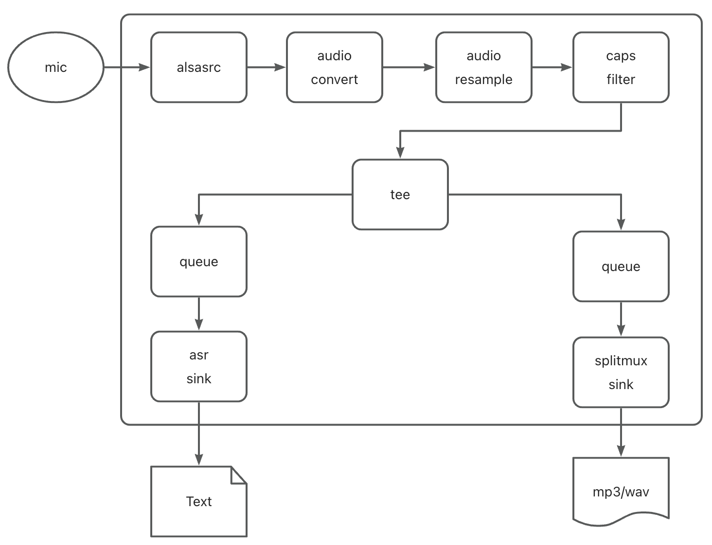
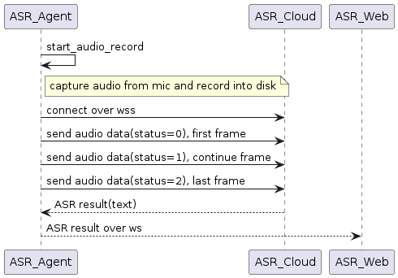

树莓派上的语音识别一
Posted on Sat 25 May 2024 in tech
| Abstract | 树莓派上的语音识别一 |
|---|---|
| Authors | Walter Fan |
| Category | learning note |
| Status | v1.0 |
| Updated | 2024-05-25 |
| License | CC-BY-NC-ND 4.0 |
ASR(自动语音识别) 作为日常的应用已经飞入寻常百姓家了, 小米音箱, Apple Siri, 汽车上的各种语音小助手.
这些技术其实并不复杂, 普通工程师花个一两天, 就可以做个原型出来. 开源的语音识别库的精度并不理想, 而讯飞或者百度的 API 所获得的识别率还挺高的.
之前买了一个树莓派, 想给它做一个类似于智能音箱的功能, 采用 Gstreamer 结合讯飞云来构建一个如下的管道

- 捕获来自麦克风的音频流，建立audio pipeline
- 录制音频流到本地的音频文件(m3u8/ts)
- 同时编写一个 plugin (AsrSink) 与讯飞云建立 secure web socket 连接
- 发送 audio frame 到讯飞云
- 接收来自讯飞云的语音识别结果
- 通过 websocket 发回语音识别结果
讯飞的 API 参见, 可以申请一个免费的帐号, 不过对调用次数和时长有一定限制
https://www.xfyun.cn/doc/asr/voicedictation/API.html

@startuml
participant ASR_Agent as agent
participant ASR_Cloud as asr_cloud
participant ASR_Web as web
agent -> agent: start_audio_record
note right of agent: capture audio from mic and record into disk
agent -> asr_cloud: connect over wss
agent -> asr_cloud: send audio data(status=0), first frame
agent -> asr_cloud: send audio data(status=1), continue frame
agent -> asr_cloud: send audio data(status=2), last frame
asr_cloud --> agent: ASR result(text)
agent --> web: ASR result over ws
@enduml
调用的 python 示例代码如下
# -*- coding:utf-8 -*-
#
# author: iflytek
#
# 本demo测试时运行的环境为：Windows + Python3.7
# 本demo测试成功运行时所安装的第三方库及其版本如下，您可自行逐一或者复制到一个新的txt文件利用pip一次性安装：
# cffi==1.12.3
# gevent==1.4.0
# greenlet==0.4.15
# pycparser==2.19
# six==1.12.0
# websocket==0.2.1
# websocket-client==0.56.0
#
# 语音听写流式 WebAPI 接口调用示例 接口文档（必看）：https://doc.xfyun.cn/rest_api/语音听写（流式版）.html
# webapi 听写服务参考帖子（必看）：http://bbs.xfyun.cn/forum.php?mod=viewthread&tid=38947&extra=
# 语音听写流式WebAPI 服务，热词使用方式：登陆开放平台https://www.xfyun.cn/后，找到控制台--我的应用---语音听写（流式）---服务管理--个性化热词，
# 设置热词
# 注意：热词只能在识别的时候会增加热词的识别权重，需要注意的是增加相应词条的识别率，但并不是绝对的，具体效果以您测试为准。
# 语音听写流式WebAPI 服务，方言试用方法：登陆开放平台https://www.xfyun.cn/后，找到控制台--我的应用---语音听写（流式）---服务管理--识别语种列表
# 可添加语种或方言，添加后会显示该方言的参数值
# 错误码链接：https://www.xfyun.cn/document/error-code （code返回错误码时必看）
# # # # # # # # # # # # # # # # # # # # # # # # # # # # # # # # # # # # # # # # # # # # # # # # # # # # # # # # # # # #
import websocket
import datetime
import hashlib
import base64
import hmac
import json
import os
from urllib.parse import urlencode
import time
import ssl
from wsgiref.handlers import format_date_time
from datetime import datetime
from time import mktime
import _thread as thread
STATUS_FIRST_FRAME = 0 # 第一帧的标识
STATUS_CONTINUE_FRAME = 1 # 中间帧标识
STATUS_LAST_FRAME = 2 # 最后一帧的标识
class Ws_Param(object):
# 初始化
def __init__(self, APPID, APIKey, APISecret, AudioFile):
self.APPID = APPID
self.APIKey = APIKey
self.APISecret = APISecret
self.AudioFile = AudioFile
# 公共参数(common)
self.CommonArgs = {"app_id": self.APPID}
# 业务参数(business)，更多个性化参数可在官网查看
self.BusinessArgs = {"domain": "iat", "language": "zh_cn", "accent": "mandarin", "vinfo":1,"vad_eos":10000}
# 生成url
def create_url(self):
url = 'wss://ws-api.xfyun.cn/v2/iat'
# 生成RFC1123格式的时间戳
now = datetime.now()
date = format_date_time(mktime(now.timetuple()))
# 拼接字符串
signature_origin = "host: " + "ws-api.xfyun.cn" + "\n"
signature_origin += "date: " + date + "\n"
signature_origin += "GET " + "/v2/iat " + "HTTP/1.1"
# 进行hmac-sha256进行加密
signature_sha = hmac.new(self.APISecret.encode('utf-8'), signature_origin.encode('utf-8'),
digestmod=hashlib.sha256).digest()
signature_sha = base64.b64encode(signature_sha).decode(encoding='utf-8')
authorization_origin = "api_key=\"%s\", algorithm=\"%s\", headers=\"%s\", signature=\"%s\"" % (
self.APIKey, "hmac-sha256", "host date request-line", signature_sha)
authorization = base64.b64encode(authorization_origin.encode('utf-8')).decode(encoding='utf-8')
# 将请求的鉴权参数组合为字典
v = {
"authorization": authorization,
"date": date,
"host": "ws-api.xfyun.cn"
}
# 拼接鉴权参数，生成url
url = url + '?' + urlencode(v)
# print("date: ",date)
# print("v: ",v)
# 此处打印出建立连接时候的url,参考本demo的时候可取消上方打印的注释，比对相同参数时生成的url与自己代码生成的url是否一致
# print('websocket url :', url)
return url
# 收到websocket消息的处理
def on_message(ws, message):
try:
code = json.loads(message)["code"]
sid = json.loads(message)["sid"]
if code != 0:
errMsg = json.loads(message)["message"]
print("sid:%s call error:%s code is:%s" % (sid, errMsg, code))
else:
data = json.loads(message)["data"]["result"]["ws"]
# print(json.loads(message))
result = ""
for i in data:
for w in i["cw"]:
result += w["w"]
print("sid:%s call success!,data is:%s" % (sid, json.dumps(data, ensure_ascii=False)))
except Exception as e:
print("receive msg,but parse exception:", e)
# 收到websocket错误的处理
def on_error(ws, error):
print("### error:", error)
# 收到websocket关闭的处理
def on_close(ws,a,b):
print("### closed ###")
# 收到websocket连接建立的处理
def on_open(ws):
def run(*args):
frameSize = 8000 # 每一帧的音频大小
intervel = 0.04 # 发送音频间隔(单位:s)
status = STATUS_FIRST_FRAME # 音频的状态信息，标识音频是第一帧，还是中间帧、最后一帧
with open(wsParam.AudioFile, "rb") as fp:
while True:
buf = fp.read(frameSize)
# 文件结束
if not buf:
status = STATUS_LAST_FRAME
# 第一帧处理
# 发送第一帧音频，带business 参数
# appid 必须带上，只需第一帧发送
if status == STATUS_FIRST_FRAME:
d = {"common": wsParam.CommonArgs,
"business": wsParam.BusinessArgs,
"data": {"status": 0, "format": "audio/L16;rate=16000",
"audio": str(base64.b64encode(buf), 'utf-8'),
"encoding": "raw"}}
d = json.dumps(d)
ws.send(d)
status = STATUS_CONTINUE_FRAME
# 中间帧处理
elif status == STATUS_CONTINUE_FRAME:
d = {"data": {"status": 1, "format": "audio/L16;rate=16000",
"audio": str(base64.b64encode(buf), 'utf-8'),
"encoding": "raw"}}
ws.send(json.dumps(d))
# 最后一帧处理
elif status == STATUS_LAST_FRAME:
d = {"data": {"status": 2, "format": "audio/L16;rate=16000",
"audio": str(base64.b64encode(buf), 'utf-8'),
"encoding": "raw"}}
ws.send(json.dumps(d))
time.sleep(1)
break
# 模拟音频采样间隔
time.sleep(intervel)
ws.close()
thread.start_new_thread(run, ())
if __name__ == "__main__":
# 测试时候在此处正确填写相关信息即可运行
time1 = datetime.now()
appId = os.getenv("XF_APPID")
apiSecret = os.getenv("XF_APISecret")
apiKey = os.getenv("XF_APIKey")
audioFile = "iat_pcm_16k.pcm"
wsParam = Ws_Param(APPID=appId, APISecret=apiSecret,
APIKey=apiKey,
AudioFile=audioFile)
websocket.enableTrace(False)
wsUrl = wsParam.create_url()
ws = websocket.WebSocketApp(wsUrl, on_message=on_message, on_error=on_error, on_close=on_close)
ws.on_open = on_open
ws.run_forever(sslopt={"cert_reqs": ssl.CERT_NONE})
time2 = datetime.now()
print(time2-time1)
当然自己也可以用开源的 library 实现语音识别, 例如 whipser , 只是它的实时性还有待提高.
# sudo apt update && sudo apt install ffmpeg
# pip install -U openai-whisper
import whisper
model = whisper.load_model("base")
result = model.transcribe("talk.mp3", fp16=False)
print(result["text"])
百度的 API 更加简洁一些, 示例代码如下
# -*- coding: utf-8 -*-
"""
实时流式识别
需要安装websocket-client库
使用方式 python realtime_asr.py 16k-0.pcm
"""
import websocket
import threading
import time
import uuid
import json
import logging
import sys
import const
if len(sys.argv) < 2:
pcm_file = "16k-0.pcm"
else:
pcm_file = sys.argv[1]
logger = logging.getLogger()
"""
1. 连接 ws_app.run_forever()
2. 连接成功后发送数据 on_open()
2.1 发送开始参数帧 send_start_params()
2.2 发送音频数据帧 send_audio()
2.3 库接收识别结果 on_message()
2.4 发送结束帧 send_finish()
3. 关闭连接 on_close()
库的报错 on_error()
"""
def send_start_params(ws):
"""
开始参数帧
:param websocket.WebSocket ws:
:return:
"""
req = {
"type": "START",
"data": {
"appid": const.APPID, # 网页上的appid
"appkey": const.APPKEY, # 网页上的appid对应的appkey
"dev_pid": const.DEV_PID, # 识别模型
"cuid": "yourself_defined_user_id", # 随便填不影响使用。机器的mac或者其它唯一id，百度计算UV用。
"sample": 16000, # 固定参数
"format": "pcm" # 固定参数
}
}
body = json.dumps(req)
ws.send(body, websocket.ABNF.OPCODE_TEXT)
logger.info("send START frame with params:" + body)
def send_audio(ws):
"""
发送二进制音频数据，注意每个帧之间需要有间隔时间
:param websocket.WebSocket ws:
:return:
"""
chunk_ms = 160 # 160ms的录音
chunk_len = int(16000 * 2 / 1000 * chunk_ms)
with open(pcm_file, 'rb') as f:
pcm = f.read()
index = 0
total = len(pcm)
logger.info("send_audio total={}".format(total))
while index < total:
end = index + chunk_len
if end >= total:
# 最后一个音频数据帧
end = total
body = pcm[index:end]
logger.debug("try to send audio length {}, from bytes [{},{})".format(len(body), index, end))
ws.send(body, websocket.ABNF.OPCODE_BINARY)
index = end
time.sleep(chunk_ms / 1000.0) # ws.send 也有点耗时，这里没有计算
def send_finish(ws):
"""
发送结束帧
:param websocket.WebSocket ws:
:return:
"""
req = {
"type": "FINISH"
}
body = json.dumps(req)
ws.send(body, websocket.ABNF.OPCODE_TEXT)
logger.info("send FINISH frame")
def send_cancel(ws):
"""
发送取消帧
:param websocket.WebSocket ws:
:return:
"""
req = {
"type": "CANCEL"
}
body = json.dumps(req)
ws.send(body, websocket.ABNF.OPCODE_TEXT)
logger.info("send Cancel frame")
def on_open(ws):
"""
连接后发送数据帧
:param websocket.WebSocket ws:
:return:
"""
def run(*args):
"""
发送数据帧
:param args:
:return:
"""
send_start_params(ws)
send_audio(ws)
send_finish(ws)
logger.debug("thread terminating")
threading.Thread(target=run).start()
def on_message(ws, message):
"""
接收服务端返回的消息
:param ws:
:param message: json格式，自行解析
:return:
"""
logger.info("Response: " + message)
def on_error(ws, error):
"""
库的报错，比如连接超时
:param ws:
:param error: json格式，自行解析
:return:
"""
logger.error("error: " + str(error))
def on_close(ws):
"""
Websocket关闭
:param websocket.WebSocket ws:
:return:
"""
logger.info("ws close ...")
# ws.close()
if __name__ == "__main__":
logging.basicConfig(format='[%(asctime)-15s] [%(funcName)s()][%(levelname)s] %(message)s')
logger.setLevel(logging.DEBUG) # 调整为logging.INFO，日志会少一点
logger.info("begin")
# websocket.enableTrace(True)
uri = const.URI + "?sn=" + str(uuid.uuid1())
logger.info("uri is "+ uri)
ws_app = websocket.WebSocketApp(uri,
on_open=on_open, # 连接建立后的回调
on_message=on_message, # 接收消息的回调
on_error=on_error, # 库遇见错误的回调
on_close=on_close) # 关闭后的回调
ws_app.run_forever()
本作品采用知识共享署名-非商业性使用-禁止演绎 4.0 国际许可协议进行许可。